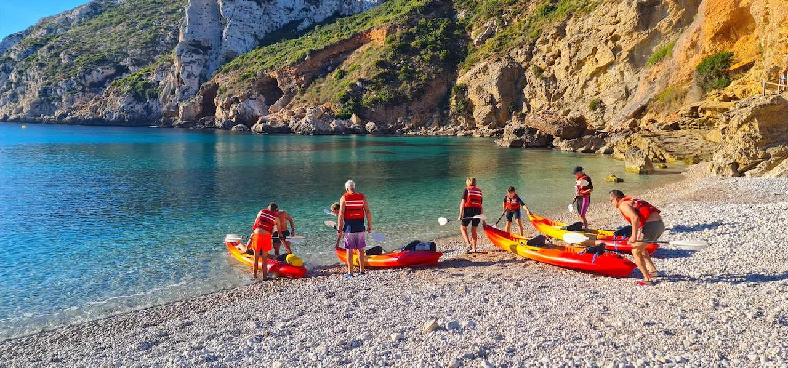

🌟 Выходные 23-24 мая — куда бы я поехала
🌟 Выходные 23-24 мая — куда бы я поехала
Три идеи под разное настроение.
🧂 Если хочется тишины — Museo de la Sal, Санта-Пола
Крошечный бесплатный музей соли прямо в природном парке. Сам музей — на полчаса, но за ним начинаются тропы вдоль соляных гор и розовых озёр. Я зашла «на минутку», а ушла через три часа. 9-14, каждый день.
🏛 Если хочется атмосферы — старый город Хавеи
Белые улочки, церковь-крепость XIV века, виды с Mirador del Castillo. Не курорт — настоящий испанский городок. Бонусом обед в порту с дневным уловом.
🌊 Если тянет к воде — Cala Granadella
Бирюзовая бухта, та самая с открыток. В мае ещё прохладно купаться, но для прогулки и видов — идеально.
А ты что выберешь — тишину, город или море? Напиши, интересно.
#выходные
10:00👁 ~?